3.1 Protección de GRUB
1. Introducción
Algunas de las operaciones básicas para securizar nuestro sistema estarán relacionadas con la protección del arranque de cualquier sistema instalado en el equipo, de la ejecución del "modo recuperación" y de la edición de las entradas del grub para, entre otras cosas, evitar que arranquen con permisos de superusuario.
En este capítulo, se describe cómo proteger el gestor de arranque GRUB de un equipo con una contraseña cifrada con la finalidad de proteger el gestor de arranque.
El motivo principal por el que hay que proteger el gestor de arranque es que sería posible iniciar sesión por ejemplo editando la configuración de arranque y añadiendo algunas líneas que nos permitan iniciar una terminal:
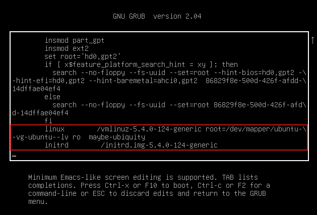
Como se puede observar en la imagen superior, si se entra en el modo edición y se añade en la línea marcada en color rojo lo siguiente: init=/bin/bash, se podría iniciar una terminal.
Puedes encontrar más información aquí.
2. Proteger el grub con contraseña
Antes de empezar con el proceso, es importante realizar una copia de seguridad de los siguientes ficheros que se van a modificar:
administrador@orion:~$cp /boot/grub/grub.cfg ~/grub.cfg.old
administrador@orion:~$cp /etc/grub.d/00_header ~/00_header.old
administrador@orion:~$cp /etc/grub.d/10_linux ~/10_linux.old
administrador@orion:~$cp /etc/grub.d/30_os-prober ~/30_os-prober.old
El siguiente paso será añadir al final del archivo la lista de usuarios con sus contraseñas, es decir, de aquellos que tendrán acceso. Para ello, se edita el fichero 00_header.
administrador@orion:~$sudo nano /etc/grub.d/00_header
Añadiendo las siguientes líneas al final, donde el usuario sería usuario_grub y su password P@ssw0rd.
cat << EOF
set superusers="usuario_grub"
password usuario_grub P@ssw0rd
EOF
Estas contraseñas se encuentran en texto plano y obviamente se deben proteger. Para esto, hay que generar un hash de una contraseña dada y, así, evitar que se puedan obtener fácilmente. El comando es el siguiente:
administrador@orion:~$ grub-mkpasswd-pbkdf2
Al ejecutar el comando, nos pedirá una contraseña (2 veces). Debemos tener en cuenta que la contraseña debe ser robusta para evitar ataques de fuerza bruta. Una vez escrita, nos mostrará una salida como la siguiente.
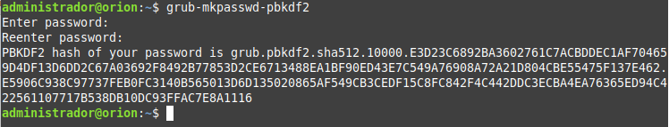
Después de introducir la contraseña dos veces se obtiene el hash de la contraseña para el usuario "usuario_grub", por lo que la tenemos que copiar para utilizarla posteriormente.
grub.pbkdf2.sha512.10000.E3D23C6892BA3602761C7ACBDDEC1AF704659D4DF13D6DD2C67A03692F8492B778
53D2CE6713488EA1BF90ED43E7C549A76908A72A21D804CBE55475F137E462.E5906C938C97737FEB0FC3140B565013D6D135020865AF549CB3CEDF15C8
FC842F4C442DDC3ECBA4EA76365ED94C422561107717B538DB10DC93FFAC7E8A1116
Ahora hay que reemplazar la contraseña que teníamos en texto plano en el archivo /etc/grub.d/00_header, para ello, lo editamos y escribimos los siguientes datos (en negrita los cambios).
cat << EOF
set superusers="usuario_grub"
password_pbkdf2 usuario_grub <salida que hemos copiado anteriormente>
EOF
Quedando de esta manera.
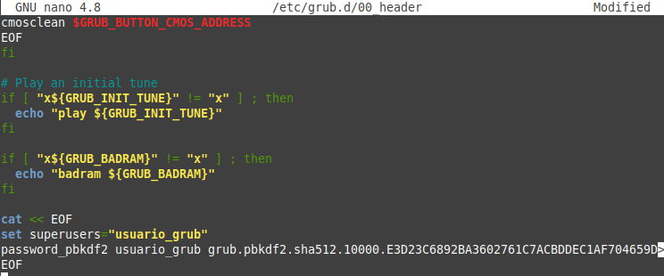
Una vez se han guardado los cambios, hay que actualizar grub para que aplique las modificaciones que hemos realizado.
root@orion:/# update-grub
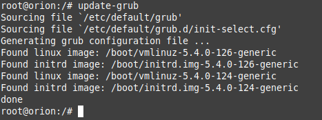
Una vez realizado esto, el menú del gestor GRUB no permitirá el acceso al editor sin escribir antes el usuario y contraseña que hemos definido en el archivo header.
A continuación, hay que reiniciar el equipo para comprobar que todo se ha realizado correctamente. Como se puede observar en la imagen inferior, al escribir el usuarios y la contraseña podremos acceder al equipo.
Finalmente, para evitar que nos pida también el usuario y contraseña al acceder al Sistema Operativo editamos el archivo /etc/grub.d/10_linux:
root@orion:/# nano /etc/grub.d/10_linux
Hay que buscar las siguientes líneas:
echo "menuentry '$(echo "$title" | grub_quote)' ${CLASS} \$menuentry_id_option 'gnulinux-$version-$type-$boot_device_id' {" | sed "s/^/$submenu_indentation/"
else
echo "menuentry '$(echo "$os" | grub_quote)' ${CLASS} \$menuentry_id_option 'gnulinux-simple-$boot_device_id' {" | sed "s/^/$submenu_indentation/"
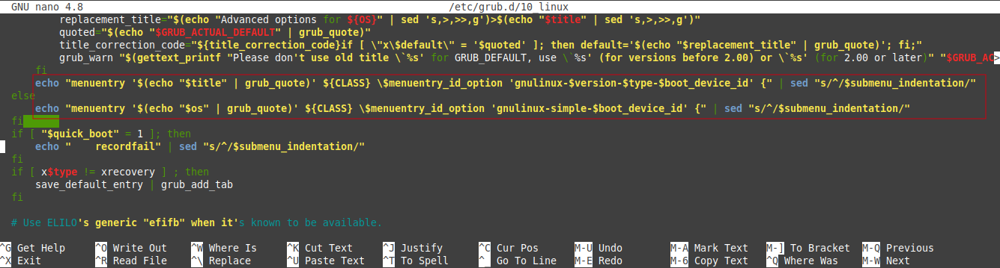
A dichas líneas hay que añadir –unrestricted, quedando de la siguiente manera:
echo "menuentry '$(echo "$title" | grub_quote)' ${CLASS} --unrestricted \$menuentry_id_option 'gnulinux-$version-$type-$boot_device_id' {" | sed "s/^/$submenu_indentation/"
else
echo "menuentry '$(echo "$os" | grub_quote)' ${CLASS} --unrestricted \$menuentry_id_option 'gnulinux-simple-$boot_device_id' {" | sed "s/^/$submenu_indentation/"
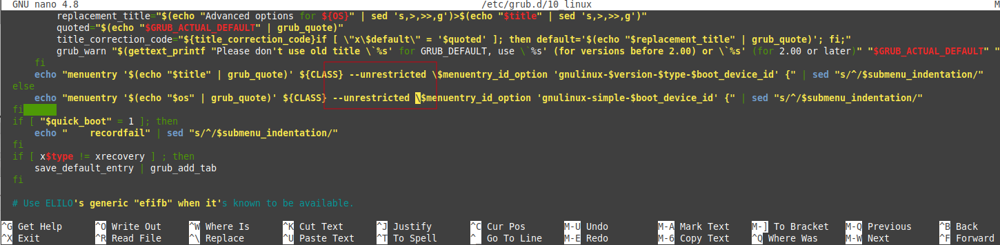
Una vez se han guardado los cambios, hay que actualizar grub para que aplique las modificaciones que hemos realizado.
root@orion:/# update-grub
Si reiniciamos el equipo se puede observar que si se intenta acceder a las opciones avanzadas nos pedirá usuario y contraseña:
| 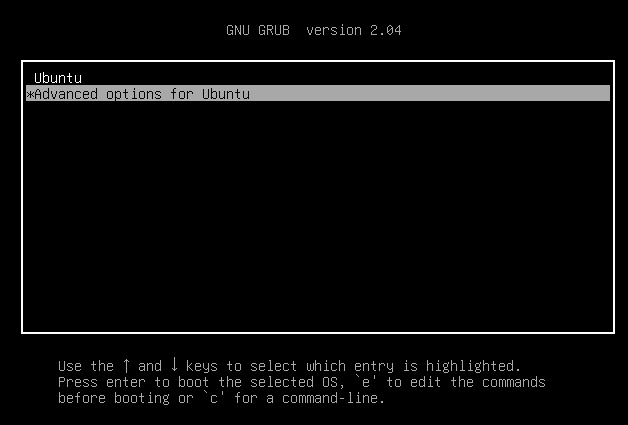 | 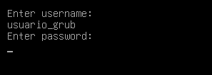 | 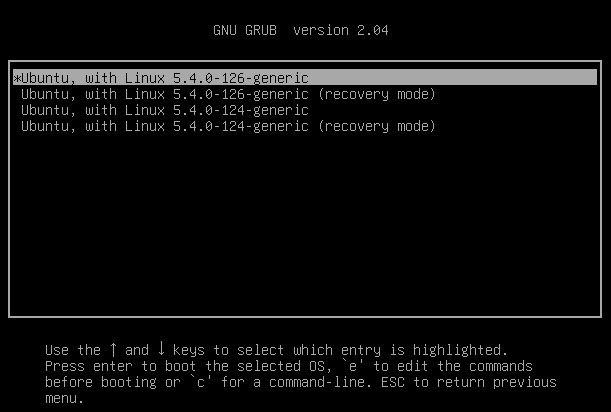 |
| Pulsamos las opciones Avanzadas | Nos solicita las credenciales | Si la validación es correcta, ya se puede arrancar el sistema con la opción deseada |
3. Uso obligatorio de contraseña en modo Single User
El modo Single User permite acceder al modo de recuperación del sistema. Si no establecemos una contraseña es posible que un atacante pueda acceder con los permisos de root al mismo.
Para evitarlo, como root, escribiremos el siguiente comando para establecer una nueva contraseña:
root@orion:/# passwd
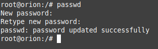
4. Permisos mínimos en archivo de arranque
Para evitar accesos o modificaciones del archivo de arranque, es importante establecer unos permisos mínimos de lectura en el mismo. Para ello, haremos que solo tenga permisos de lectura root:
root@orion:/# chmod 400 /boot/grub/grub.cfg
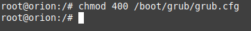
Comprobamos el estado mediante el siguiente comando donde podemos verificar si se ha modificado el fichero o no en el tiempo.
root@orion:/# stat /boot/grub/grub.cfg
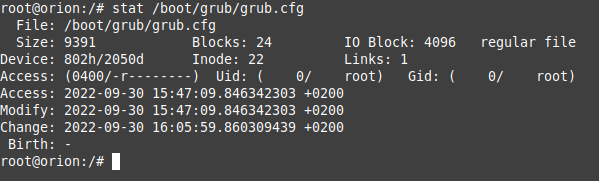
Obra publicada con Licencia Creative Commons Reconocimiento No comercial Compartir igual 4.0